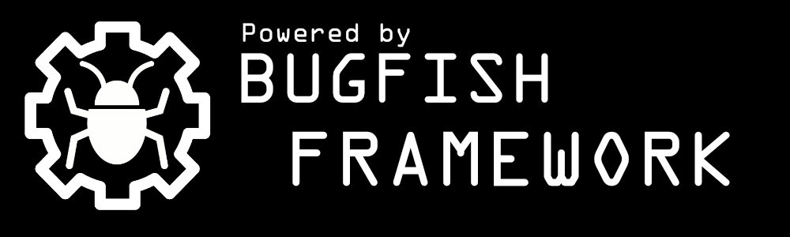

Bind9 Web Manager [DNSHTTP]Documentations
This is the Documentation for the Bind9 Web Manager [DNSHTTP] Websoftware!
Download GithubGeneral Informations
I trust that this description will provide you with a comprehensive understanding of the setup process. The purpose of this web-based software, known as "Bind9 Web Manager," is to streamline and enhance the replication process through DNS, offering increased transparency and control. My endeavor was to create a procedure that is both straightforward and efficient, ensuring a seamless experience when used in conjunction with the BIND9 DNS server.

Project has been developed with help of the "Bugfish Framework"
This software, "Bind9 Web Manager," is designed with versatility in mind. It has been engineered to work harmoniously with various hosting software platforms, such as Plesk, Virtualmin, ISPConfig, and even as a standalone solution. This level of compatibility allows for a wide range of integration options, catering to diverse hosting environments and preferences.
By following the instructions outlined here, you should be well-equipped to attain your desired outcome using my DNS tool, which is not only optimized for collaboration with the BIND9 DNS server but also offers a flexible approach to integration with different hosting software configurations.
Within the subsequent sections, you will find an overview of the software's features, as well as guidance on configuration and usage, specifically tailored to its compatibility with various hosting software platforms. Furthermore, I have created a tutorial video available on my channel, which you can access through the playlist mentioned in the concluding section of this documentation. This resource is intended to offer you further insights into the functionality of the software within the context of its collaboration with different hosting environments.
Should you have any further inquiries or require additional assistance, please do not hesitate to reach out.
Tutorial Videos
Compatibility
This software has been tested on different linux system with postfix in standalone mode and with bind together if auto-domain-fetching for domain relaying is needed.
Tested on: Debian 8/9/10/11
Tested on: Ubuntu 16/18/20/22
Tested on: Different Bind Versions (Standalone)
Tested on: Different ISPConfig Versions (With ISPConfig Settings for ISPConfig Users [example integrated])
Tested on: Different Virtualmin/Webmin Versions (With Virtualmin/Webmin Settings for Virtualmin/Webmin Users [example integrated])
Tested on: Different Plesk Versions (With Plesk Settings for Plesk Users [example integrated])
Screenshots


{kind=link}
{kind=link}
{kind=link}
Slave server replication
Within this section, you will gain comprehensive control over the replication process between your Slave and Master Servers, assuming that BIND9 is operational on both systems. This robust feature set empowers you to effectively manage the intricate replication dynamics. To facilitate your understanding of the setup procedure, further details on establishing connections are provided below.
By utilizing this panel, you will acquire a meticulously detailed overview of replication-related conflicts, granting you invaluable insights into the intricacies of the replication process. Additionally, you will wield substantial control over the replication mechanism, ensuring a refined and optimized replication experience.
The "Replications" Tab within the website furnishes you with an up-to-the-minute status report on the most recent replication endeavor. This real-time visibility allows you to promptly identify any anomalies and maintain a pulse on the replication process.
Navigating to the Servers page, you will encounter a range of distinct buttons designed to assess server responsiveness and verify the efficacy of security keys. These functional elements contribute to the reassurance of a secure and dependable server environment.
Through the combination of comprehensive insights, detailed control, and real-time status updates, this panel stands as an indispensable asset in the orchestration of seamless replication interactions. Your ability to effectively manage the replication process ensures the continuity and reliability of your DNS infrastructure. Should you encounter any queries or require further guidance, do not hesitate to seek assistance; we are here to support your success.
Slave/DNS Server Hybrid Support
The flexibility of this platform extends to the realm of Slave/DNS Server hybridization. It is entirely possible for a single server to concurrently serve as both a Master and a Slave Server. By registering a Master Server within the dedicated Servers Section, you initiate a distinct configuration wherein the registered server assumes the role of a Slave Server. This multifaceted functionality empowers the designated Slave Server to engage in domain replication from the specified Master Server.
This innovative capability presents a remarkable opportunity for streamlined and resource-efficient management of your DNS architecture. The intricacies of orchestrating replication interactions between servers are further simplified through this versatile hybrid approach. It is our commitment to equip you with powerful tools and functionalities that cater to your evolving DNS needs.
As you explore the potential of Slave/DNS Server hybrid support, rest assured that our documentation and support channels are available to clarify any queries or provide assistance in navigating this advanced configuration. Your success in harnessing the capabilities of this hybrid model is our priority.
User Management
Integral to this software is a robust user management system, affording you complete control over user-related operations. Within this framework, you possess the authority to create, edit, and delete users, thus curating an environment tailored to your organizational structure. A defining facet of this system is the ability to allocate distinct permissions across various functional domains to individual users.
By virtue of this granular permission assignment, you exercise precision in delegating responsibilities, ensuring that each user is equipped with access only to the areas pertinent to their role. This level of control establishes an ecosystem characterized by both security and efficiency, optimizing workflow while safeguarding sensitive aspects of your DNS infrastructure.
As you engage with the user management features, the software ensures a seamless experience, simplifying administrative tasks while maintaining the integrity of your system. Should you require further guidance or clarification regarding the intricacies of user management, our support resources are readily available to aid you in harnessing the full potential of this robust functionality.
Rights Management
A key aspect of this software is the sophisticated user rights management functionality, which empowers you to establish precise controls over user activities within their designated operational areas. This capability extends to the ability to confine users to specific operational confines, a process often referred to as "jailing." This feature proves invaluable when it becomes necessary to restrict users to their designated domains of operation.
Through the utilization of this rights management framework, you wield the authority to curate a secure and structured environment where user actions are confined to the realms they are authorized to access. The judicious implementation of jailing ensures operational integrity while minimizing the risk of unintended modifications or disruptions to other domains.
By embracing this robust rights management system, you are investing in a comprehensive approach to user oversight that underscores your commitment to operational efficiency, security, and accountability. As you navigate this feature, remember that our support network is poised to assist you in maximizing the benefits of rights management within your DNS infrastructure.
IP Blacklisting
Within the framework of this software, you wield comprehensive control over IP blacklisting through the dedicated "Blocklist" area on the webpage. This sophisticated feature operates through the tracking and accumulation of IP counters, which are incremented for instances of failed logins and unsuccessful API token requests. This strategic approach to blacklisting empowers you to effectively mitigate potential security threats by promptly identifying and addressing suspicious or unauthorized activities.
Should the need arise to lift an IP ban, the user-friendly panel affords you the means to swiftly reverse the blacklisting. Alternatively, for those seeking a streamlined and automated approach, the execution of the daily.php cronjob on a regular basis can reset the IP blacklisting table, promoting a dynamic and responsive security posture. This reset mechanism, configurable as an optional daily task, ensures that your system maintains its vigilance against security risks.
It's crucial to note that when an IP reaches its predetermined limit within the blacklisting system, it is consequently restricted from initiating API requests and accessing the login panel. Notably, this measure extends to replication processes as well, rendering it impossible for a server with a blocked IP to participate in replication activities.
This robust IP blacklisting system stands as a testament to our commitment to fortifying your software experience with dynamic and effective security measures. Should you require further elucidation or assistance with leveraging this feature, our support channels remain at your disposal.
Self Explaining
We've endeavored to create a user-centric experience that simplifies the process of understanding and using our software. Central to this effort is the provision of comprehensive documentation and instructions, seamlessly integrated within the web interface itself. This deliberate approach ensures that the resources you need to navigate the software are readily available within the environment where you interact with it.By housing the documentation and instructions directly within the web interface, we eliminate the need for external references or cumbersome switches between interfaces. This design choice streamlines the learning curve and empowers you to explore the software's functionalities with ease. Whether you're seeking guidance on configuration, exploring features, or troubleshooting issues, you'll find the relevant information at your fingertips.
This self-contained approach reflects our commitment to user convenience and efficiency. We believe that the best software experiences are intuitive and accessible, and by embedding comprehensive documentation within the web interface, we aim to provide you with a seamless and self-explaining journey. As you embark on your software utilization, remember that the information you need is always within reach, right where you need it.
Replication Insights
The software's standout feature resides in its ability to provide detailed insights into the intricate dynamics of replication and domain information. Users can benefit from an in-depth perspective on the replication process, complete with real-time updates and comprehensive visibility into various aspects.
By utilizing the software, users gain access to an extensive range of data that delves beyond surface-level metrics. This comprehensive dataset encompasses crucial details, including replication statuses, potential conflicts, and intricate domain information. These insights empower users to make well-informed decisions, proactively address challenges, and optimize their overall replication strategy.
The software's commitment to clarity and precision is evident across all its functionalities. As users engage with the replication insights offered, they can discover a valuable resource that not only streamlines replication management but also enhances their understanding of their DNS ecosystem.
Users are invited to explore the array of replication insights provided by the software. This comprehensive perspective is poised to enhance users' confidence in managing the replication process adeptly. For further guidance or clarification on specific insights, the support team is readily available to assist users in deriving maximum value from this robust feature.
Rollback Ease and Precision
An intrinsic attribute of this software is its non-destructive nature. The software operates without altering your core files; rather, it establishes its own configuration files for seamless functionality. This design philosophy is rooted in the principle of safeguarding the integrity of your existing system.
Should any unforeseen issues arise within the context of the software's operation, rest assured that provisions for a swift and reliable rollback are in place. Configuration files that stand to be influenced by the software's operation are meticulously preserved in their original locations, albeit under distinct names to prevent potential conflicts. Importantly, only a single bind file necessitates manual adjustment to ensure harmonious coexistence.
In the unlikely event that a rollback is required, the process is both straightforward and effective. By reverting your named.conf file to its original state in the designated directory (/etc/bind), any changes introduced by the software are promptly neutralized. This streamlined approach offers a rapid solution for rectifying configuration-related issues that may manifest within your DNS system.
It's important to note that while this rollback mechanism is particularly applicable to master servers, caution is advised when applying configuration changes to slave servers. Such changes have the potential to inadvertently result in the unregistration of slave domains.
By embracing this non-destructive methodology, we prioritize the stability and functionality of your DNS infrastructure. Should you require further guidance or encounter scenarios where this feature proves invaluable, our support network is at the ready to ensure your experience remains both seamless and productive.
Issues
In the event that you encounter any challenges or have inquiries while using this software, we encourage you to reach out for assistance. Our dedicated support platform is available through our forum located at www.bugfish.eu/forum. This specialized forum serves as a central hub for addressing any issues, seeking solutions, and engaging in discussions related to the software's functionality.
Rest assured that our team is committed to promptly addressing your concerns and providing the guidance necessary to ensure a seamless software experience. Your feedback is invaluable in our ongoing efforts to refine and enhance the software, and we welcome your contributions to our community.
Installation
What follows are instructions how to install this software and what is required to run it!
Requirements
- Elevated permissions (root) required for cronjob execution
- Apache2 web server with robust PHP 8 support is mandatory
-
Apache2 Modules:
- rewrite, headers
-
PHP Modules:
- mysql, curl, intl, mbstring, zip, gd
- Unrestricted access to a MySQL database, with full permissions
- Ports 53/953 (TCP/UDP) for DNS must be open
- Port 80/442 (TCP) for web access should be open
Installation Steps
- Begin by uploading the files located in the "_source" directory of this repository to your webspace.
- Inspect the Settings.sample.php files (in this repository _settings folder, they are examples) and provide valid MySQL user information(refer to comments within the file).
- Rename the Settings.sample.php file to settings.php in your websites document root folder.
- Login using the default credentials (refer to the section below in this readme [admin/changeme]).
- Set up the cronjobs as outlined in the instructions below in the "Setting up Cronjob" Section.
- Keep a backup of the original file; if you want to deactivate all functionalities of this panel for Bind, you can revert to the old file (Exception for this rollback method is if you using this script in a virtualmin environment as master/hybrid server - than a simple revert to the old file wont work). If you've made any changes to this relevant file during the setup, adjust this setting accordingly. However, this setting is suited for a default configuration and installation. It is not advisable to alter this unless necessary.
- Delete the file /etc/bind/named.conf - This software will generate its own on the next sync.php cronjob run! (see previous list item for more informatiosn)
- With these steps completed, you are now prepared to utilize all the functionalities of this software! There's no need to manually set up MySQL tables; the software will handle this during installation. You can now log in at the domain where your website is deployed...
Rollback
As described in the installation steps, you changed file named.conf. You shall have made a backup like described in the Installation steps. If you replace your named.conf with your old initial backuped-file - All Changes made by DNSHTTP to your Bind9 Instance will be gone. This is a simple but trustfull way to "hard" deactivate and activate this software connection with bind. This may not work if you are using this software on a virtualmin environment as hybrid/master server. In this case you have to fix issues manually in case there are some. This script has been tested a long time in virtualmin. A rollback/fix on Virtualmin Servers will be less easy than a fix on other systems, but if you have some experience with DNS you should always been able to fix it yourself. You are free to ask on my forum or contact me if you have issues. If i have the possibility i will try to help you.Setting Up Cronjobs
Please ensure that both cronjobs are configured as the root user.
| Command | Interval | Description |
|---|---|---|
| DOCROOT/_cronjon/daily.php >/dev/null 2>&1; | daily | Resets Blacklisted IPs for Web Interface and API Requests (Optional but Recommended) |
| DOCROOT/_cronjon/sync.php >/dev/null 2>&1; | hourly | Essential for DNS Server Configuration Operations, Database Synchronization, Replication, and Autosetup This cronjob will restart Bind and set permissions for folders and zone files when completed. You can adjust the interval as needed; a one-hour interval is recommended for faster replication. |
| DOCROOT/_cronjon/notify.php >/dev/null 2>&1; | favor | Optional Cronjob / Script to display last changes and delete them in the interfaces activity section! (optional) |
Domains, Replications and Conflicts
You can see replicated Domains in the Domains Section. There are all domains which have been copied from other dns servers, which are registered in the Replication Servers Area! The data in the interface you see may outdated. It updates every time the cronjob dies execute, you will see the last time of execution on top of the domain pages. There are a lot of icons which describe the status of servers or domains, you can see what the icons mean below in the icon description area!If you visit the Replication Area you will be able to get access to the Replication Logfile and the DNS Server Manager. You can get informations how to set up a DNS Server Connection below. In some cases, if there are errors, you may get more insights in that area about this area.
Within the Domain section, you gain visibility into domains that have undergone replication or have been fetched locally. The Master Domains section specifically presents domains that have been locally fetched. Domains in this section are inherently treated as master domains. It's important to adhere to the guideline of refraining from registering other slave domains locally. The software's framework anticipates that exclusively master domains are configured within the local servers' named.conf.local and named.conf.default-zones (or the designated file writte in the settings page). This configuration is suitable for the majority of setups, especially when employing this software for replication purposes. The fetched local Master Domains, which potentially can be replicated to other servers, can be comprehensively reviewed in the Domain->Master Domains Section, complete with their respective statuses. Further elucidation of the icons can be found in the documentation.
Within the Domains section, you'll find Domains labeled "Slave Domains." For more comprehensive insights into the various status icons, detailed information can be found in the documentation.
Conflicts may arise in scenarios where a domain exists both as a master domain on the local server and as a slave domain on a remote server, or if two slave servers provide the same master domain. In such cases, these conflicts are highlighted within the dedicated "Conflicts" Section. To address conflicts, you have the option to give preference to a particular domain in the Domains section. This chosen domain then takes precedence in conflict situations. Failing to resolve a conflict will result in the domain not being registered in the local bind instance. Therefore, resolving conflicts becomes essential for maintaining domain activity. The conflicts section primarily serves as an overview of conflicts, their resolutions, and the affected servers—the origins of the conflicts. Conflicts can be resolved by designating a preferred domain. Unsolved conflicts are marked in yellow, whereas resolved conflicts are indicated in green.
It's important to highlight that local Master domains are inherently preferred by default. This preference mechanism serves to safeguard against conflicts that could lead to slave servers inadvertently deregistering domains.
Replication Logfile
Contained within the Replication Logfile is a comprehensive record of the entire replication process, meticulously orchestrated by the cronjob sync.php. This logfile serves as a repository of the intricacies involved in the executed operations. While much of this information is accessible through the user interface (UI) and does not necessarily require direct inspection of the log files, delving into the Replication Logfile can prove immensely valuable when troubleshooting errors or conducting in-depth analysis.Domain Detail View
While navigating the Domains Section's Domains Overview, you have the ability to inspect the zonedata for domains that have been fetched either externally through replication or locally. Should any errors manifest within the zonedata, these are visually indicated by an icon. To gain further insights into these errors, the "Details" button window provides access to the output of the named-zonecheck command. Within this window, you'll find supplementary information regarding the domain and any errors that might have arisen during the execution of sync.php. This background process orchestrates various tasks and operations.Authenticity of the Webinterface
It's important to note that updates to the Domain Section exclusively occur during the operation of the cronjob sync.php. At the uppermost part of the page, the date and time of the most recent data update are displayed in green. To initiate a data update, you have the option to manually execute sync.php or alternatively, you can await the completion of the next scheduled cronjob cycle for automatic updates. (For further guidance, refer to the "Installation" section.)Types of Server Connections
In scenarios where a system comprises dedicated Master Domains and Slave Servers, deploying this software on both servers is recommended. On the Master server, the Slave Server should be configured, designating it as such within the software. This entails specifying the relevant website URL where the panel is hosted, ensuring an identical token to the counterpart server, and providing the external server's IP address. It is crucial that this external IP address is valid, as the replication process hinges on this. At least one functional IPv4 or IPv6 address is necessary for the other nameserver's accessibility.Concurrently, on the Slave Server, the installation of the panel is also required. Here, the Master server should be set up within the Replication Server Area. The status icons indicating the feasibility of the connection can be observed, with detailed explanations available in the documentation.
Furthermore, the software accommodates "hybrid" connections, wherein each server equipped with this panel can function as both a slave and a master server simultaneously. This configuration proves advantageous, and the conflict section proves particularly useful in these setups.
Domain Settings will not Sync
When establishing a Slave/Master Server connection, it's important to note that certain settings pertaining to domain preferences or replication blocking will not be synchronized between the servers. If you wish to prioritize a domain on two Master servers, you must individually configure the preference on each respective Master server. It's crucial to understand that the replication process exclusively involves the synchronization of domains and the content within these domains. Specifically, the replication covers the domain name itself, without encompassing any additional settings or attributes associated with it.Server Tokens
For seamless server communication and successful replication processes, it's imperative to ensure uniformity in the tokens used for server connections. To illustrate, if Server 1 utilizes a token "123," it is essential that the exact same token "123" is configured on Server 2 as well. This consistency in tokens serves as a fundamental requirement for the effective operation of replication processes and other API requests. It's advisable to verify that the chosen token intended for replication exists identically on both servers, thus facilitating smooth and uninterrupted communication between them.Disable Replication for Master Domains
Within the web interface, there is a functionality that allows you to selectively disable the replication of specific master domains to slave servers. This means you can control and prevent the propagation of certain master domains to slave servers, offering a higher degree of flexibility and customization in your DNS management setup.
Zone Checks
Every zone file which will be used, will checked with the command named-checkzone before it gets written for the configuration. If that command fails, the last working file gets in affect. If there is no working file the domain will not be active. You will get notification icons on that domain for every case. Look at the status icon information below in the documentation to get informations about this status icons. If a Zone is Using its fallback zonefile, or failing verifying the new file, you can get the error string of "named-checkzone" in the domains details section.MySQL Debugging for Developers
It's crucial to note that this section is primarily intended for developers, as the software has undergone comprehensive testing, rendering this feature largely superfluous for regular users. It's important to emphasize that this section exclusively displays MySQL errors and doesn't provide insights into replication or other functionalities. In instances where MySQL errors do occur, particularly during table structure regeneration, there's no need for undue concern, as these errors are likely to self-correct over time.
Default Login for Webinterface
Username: admin
Passwort: changeme